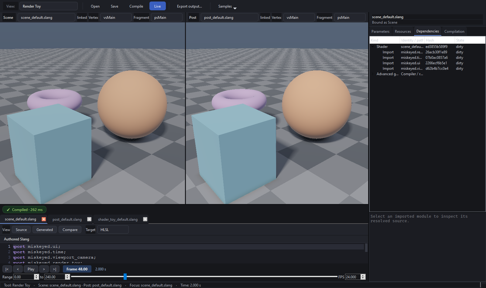

Dependency identity and invalidation¶
DependencyGraph is a persistent directed acyclic graph used to answer two
separate questions: is this product the same? and what work must run? A
32-byte content digest answers the first; node-kind dirty flags answer the second.
Calling it a Merkle DAG is not enough because a source edit is not automatically
the identity parent of every semantic compiler result.
scene.slang -> imported project.noise -> reflected entry point -> pipeline
| ^
`-> parameter layout -+
+-> UI schema
`-> parameter values
Source and imported-module nodes identify authored inputs. Compilation yields independently hashed entry-point, UI-schema, parameter-layout, resource, and pipeline products. Stable dependency keys are canonicalized, so order does not accidentally change identity and shared modules need not be copied into a tree.
Why separation matters¶
Changing UIName can change the inspector schema without changing uniform byte
layout, so it should not rebuild a GPU pipeline. A slider changes parameter values
and normally requests only a uniform upload. An imported module edit invalidates
documents that resolved that module. A binding-layout change requests binding and
pipeline work even if a label did not change.
The inspector presents authored sources/imports first and keeps internal compiler
and renderer products under an advanced branch. See
cpp/include/miskeyed/workbench/core/DependencyGraph.h and graph construction in
cpp/src/workbench/slang/ShaderDocument.cpp.
